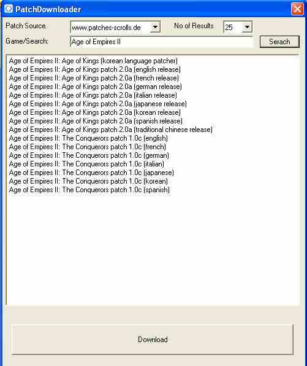
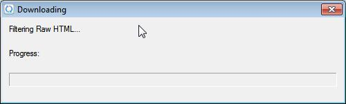
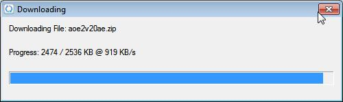

Function
Downloads Patches and installs them in the local folder ready for GameManager FrontEnd to access and install.
Interface

You
should be greeted with this screen when you click the download button
from within FrontEnd, if the wrong results are returned then change
the keywords in the box next to 'Game/Search' then click Search.
Removing numbers and punctuation increases relevant results and
removing a few keywords will increase results if its not returning
any. Alternatively you can increase the number of results returned
from 25 up to 100 but beware that this decreases stability and the
program may hang for a few seconds.
Select the patch required and click 'Download'
You will then be
presented with:

It
may take up to a minute to do various commands before it starts
downloading, when it has started downloading you will then see the
following window

After
it has finished downloading it will return to the main
PatchDownloader window shown at the top of this document.